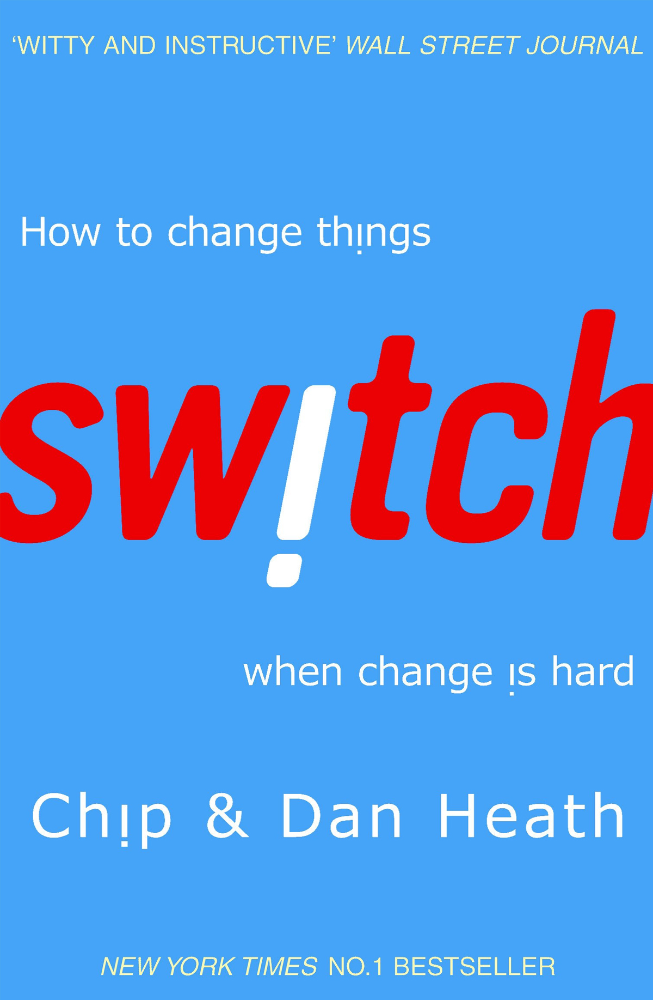

How to change things when change is hard?
Neu-Ulm University of Applied Sciences
November 19, 2025
All change
= behavior change
For something to change, somebody somewhere has to start behaving differently—in other words, all change is ultimately behavior change. Chip Heath, American author
A bad habit is something where you have all the information you need to see it’s a bad behavior, yet your keep doing it anyway.
Are you engaged in some kind of behavior you want to change but struggle with? Why?
A fundamental tension of psychology: knowing what the right answer is vs. doing it.
Let’s have a look how this can be explained and turn to the theoretical foundations.
Theory helps us to understand why interventions work (or fail), to predict outcomes in new situations, to generalize beyond specific cases, and to justify our change strategies.
System 1 vs. System 2
Psychology assumes that the brain has two independent systems at work at all times (Kahneman, 2011).
| System 1 | System 2 |
|---|---|
| Fast, automatic | Slow, deliberate |
| Effortless | Effortful |
| Associative | Rule-based |
| Emotional | Logical |
Both systems operate simultaneously and often conflict (Kahneman, 2011).
Self-control acts like a muscle.
Self-control and willpower function as limited cognitive resources that deplete with use (Baumeister et al., 2007).
Change strategies relying purely on willpower are likely to fail, especially under stress or cognitive load.
People vs. situation problems
We systematically overestimate personal factors and underestimate situational factors when explaining behavior (Ross, 1977).
Classic demonstration
“People problems” are often “situation problems”—change the context, change the behavior.
Pre-loading decisions through action triggers
Specifying the when, where, and how of goal pursuit significantly increases success rates (Gollwitzer, 1999).
| Simple Goal | Implementation Intention |
|---|---|
| “I intend to exercise more” | “If it’s Monday at 7am, I will put on running shoes and run for 20 minutes” |
| Weak commitment | Strong commitment |
| Moment-of-choice decision | Pre-decided action |
Creating automatic links between situational cues and actions reduces reliance on willpower (Gollwitzer, 1999).

Heath & Heath (2011) elegantly integrate these foundations into a unified framework — Switch.
Chip and Dan Heath have mined the latest psychological research to work out how to engage our emotional brain, and encourage us to focus on “bright spots”—techniques proven to help us change bad habits—rather than merely telling us what we’re doing wrong. Psychologies Magazine
Rider + elephant + path
If you want to change things, you’ve got to appeal both. The rider provides the planning and direction, and the elephant provides the energy. [..] A reluctant elephant and a wheel-spinning rider can both ensure that nothing changes. But when elephants and riders move together, change can come easily. Heath & Heath (2011)
Direct the rider
Motivate the elephant
Shape the path
Now that you understand the framework …
… analyze behavior you want to change but struggle with identified before.
05:00
We’ve seen the theoretical foundations … but how do you actually use this framework?
Each component has specific, research-backed strategies:
Let’s explore each in depth using examples reported in Heath & Heath (2011).
Paralysis in the face of …
Tell us about a time when you experienced mental paralysis.
Discuss these questions in small groups and come up with one example you could present to the plenum.
10:00
What can you do to resolve mental paralysis and/or resistance?
Follow the bright spots
Script the critical moves
Point to the destination
Investigate what’s working and clone it. Heath & Heath (2011)
In 1990, Jerry Sternin was working for Save the Children, asked to open a new office in Vietnam “to make a difference” within 6 months (see e.g., Marsh et al., 2004).
Switch from a problem focus to a solution focus.
Don’t just think big picture,
think in terms of specific behavior. Heath & Heath (2011)
In 1996, GP Investimentor Limited bought parts of the Brazilian railway network (a deteriorating mess) and set a young talent in charge—Alexandre Behring.
If you want to change things, be clear about how people should act.
Change is easier when you know where you’re going and why it’s worth it. Heath & Heath (2011)
After decades of success, in the 90s, BP had issues to find untapped oil resources.
Paint a specific, rich, detailed picture of what the destination looks like to motivate people.
Information vs. feeling
Can you think of any situations in life where you or others have tried to get people to change their minds with information, rather than with feelings?
How could those situations be approached differently to be more effective?
03:00
What can you do to prevent exhaustion?
Find the feeling
Shrink the change
Grow your people
Knowing something isn’t enough to cause change. Make people feel something. Heath & Heath (2011)
After enduring weeks of brutal chemotherapy in the hospital, the children struggled to faithfully take their medications at home.
If you skip 20 percent of your doses, you don’t have a 20 percent higher chance of getting cancer again. Your odds go up 200 percent. Steve Cole, research director for HopeLabs
Hope labs developed a game called Re-Mission (Kato et al., 2008).
Things you see are more likely to evoke emotion than things you read.
Make the need for change clear (tangible).
Downsize the change until it no longer frightens the elephant.
A local car wash ran a promotion featuring loyalty cards (Nunes & Dreze, 2006).
People find it motivating to be partly finished with a longer story then to be at the starting gate of a shorter one Heath & Heath (2011)
Small targets lead to small victories, small victories can trigger momentum. Heath & Heath (2011)
Identities are central to the way people make decision (March, 2009).
Blackwell et al. (2007) set up a study for seventh-grade math students in school in a low socioeconomic environment.
One hardcore, turned-off, low effort kind in the group said, ‘You mean I don’t have to be dumb?’ From that day on, he worked. Heath & Heath (2011)
Create a sense of identity and convey a growth mindset.
Environment shapes behavior.
Think back over your day — when and where did your environment significantly shape your behavior?
04:00
What can you do to make change more likely?
Tweak the environment
Build habits
Rally the herd
When the situation changes, the behavior changes. So change the situation. Heath & Heath (2011)
At Kaiser South Sans Francisco Hospital, nurses administer about 800 medications a day.
Situations trump personal attributes.
When behavior is habitual, it’s “free”—it doesn’t tax the rider. Look for ways to encourage habits. Heath & Heath (2011)
Behavior is contagious.
Help it spread. Heath & Heath (2011)
All three components matter.
Success = all three aligned
Think of a change initiative you’ve witnessed that failed.
05:00
You want to learn how to lead change more efficiently? Here are three challenges that might help you along the way.
For digging deeper, I recommend reading the articles cited here, plus:
as well as following books:
Steve Booth-Butterfield and Bill Reger, professors at West Virginia University, were contemplating ways to persuade people to eat a healthier diet. They concluded that you don’t need to change drinking behavior, but purchasing behavior. Thus, they launched a campaign that was punchy and specific in motivating people to buy skimmy milk (instead of the fuzzy message to act healthier) (Booth-Butterfield & Reger, 2004).
In 2004, Donald Berwick, a doctor and the CEO of the Institute of for Healthcare Improvement, wanted to save a massive number of lives by reducing the “defect” rate in healthcare (e.g., administration of medication at the wrong time). Besides providing a crystal clear direction, he also motivated people by making them feed the need for change—he confronted hospital administrators with the mother of a girl who’d been killed by a medical error (Berwick et al., 2006).
A study of Brian Wansink of the Food and Brand Lab at Cornell University shows in his popcorn studies that “people eat more when you give them a bigger container. Period.” (Wansink, 2006, pp. 16–19)
Bright spots don’t have to be shining success stories, just look for situations when things are working better than others.
How it can be that more choice is actually bad for us? (Schwartz, 2009; Schwartz & Ward, 2004)
When the elephant really wants something, the rider can be trusted to find rationalizations for it.
Please consider that black and white goals create a danger of demoralization if you don’t meet them consistently.
Social learning
If others do it, it must be appropriate.
Behavior is learned through observation and shaped by what others do (“social proof”) (Bandura, 1977; Cialdini, 2006).
Highlighting positive examples can accelerate diffusion of new behaviors through social proof.